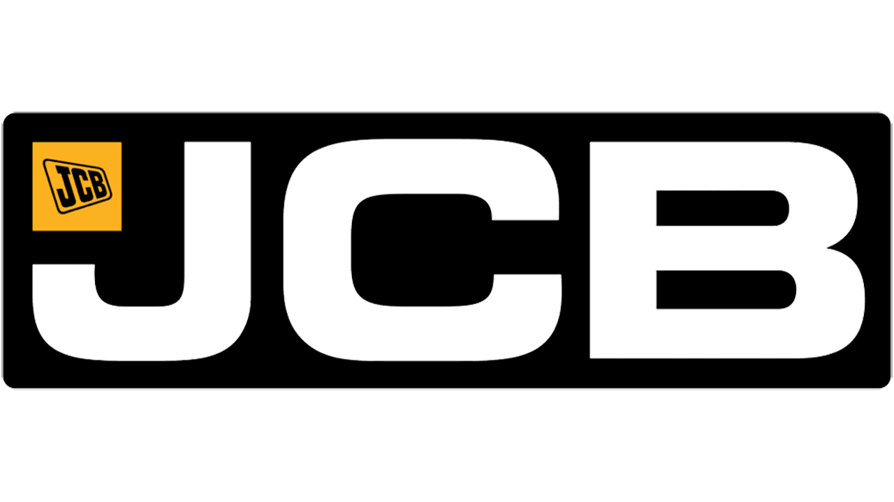

Capturas reales del sistema01Experiencia profesional2024–2026
ERP JCB AZTECA
Evolución de una plataforma ERP para servicios, almacén, ventas y administración. Mi trabajo abarcó análisis de procesos, desarrollo Full Stack, integridad de datos, soporte en producción y capacitación del personal.
- Mantenimientos digitalizados: tickets, agenda, técnicos, refacciones y evidencias integrados para generar el reporte PDF con un botón.
- Inventario y datos: corrección de lógica e históricos; depuración y migración de más de 200,000 registros empresariales.
- Operación diaria: dashboards, integraciones, atención de incidencias y acompañamiento a usuarios.
PHPLaravelJavaScriptMySQLAPIs REST
Explorar caso de estudio